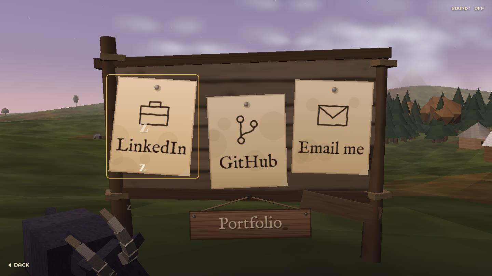

Case study · Personal project · 2026
Press Start
The 3D title screen on the front of this site. A black goat roams a Carpathian landscape in an attract-mode loop, and when you press start, the camera glides to a notice board in the world that holds my essential links.
- Type
- Personal project
- My role
- Concept, art direction
- Code
- Written by Claude, an AI model
- Built with
- three.js, Web Audio, Canvas 2D
The idea
This was my first project after a break from work, and I wanted the front door of my portfolio to feel like turning on an old console: a looping film that plays until you press start. The look comes from the attract screens of late-90s 3D games, with soft, low-contrast textures, fog, and a light CRT overlay.
Directing an AI collaborator
More and more roles ask developers to move fast with AI. My instinct runs the other way: I over-prepare, and I'll think an idea through for weeks before I touch it, even when it's just for fun. So for Press Start, I made myself stop planning and lean into vibe coding: describe it, see it, react, repeat.
I built it with Claude, an AI model, and I want to be clear about who did what. I art-directed it: the concept, the scenes, the look and sound, and many rounds of revisions. The code is AI-written, and I'm not claiming three.js skills I don't have yet.
My job was the vision and the feedback loop: deciding what each shot should feel like, and pushing until it did.
Every model, texture and sound is generated in code at runtime, so there are no image, model or audio files to lean on. Everything on screen had to be described, generated, looked at, and revised.
The surprise was how much I enjoy the other half: reverse-engineering what the AI wrote, figuring out how a shot or a sound actually works, and learning from code I didn't type.
A menu inside the world
Press start and the camera glides to a rustic notice board. The board is part of the 3D scene, not an overlay. Its notes are real links, positioned every frame over the 3D note meshes, so they work with a mouse, touch and keyboard.

The board camera is responsive too. Its distance is worked out from the field of view and the window's shape, so the board and the goat stay framed on any screen.
Details
- Sound is synced to motion. Hoofbeats are synthesized per footfall and panned by where the goat is on screen. When he sleeps, one breathing animation drives both his body and his snore.
- An original score for cimbalom and an ocarina-style flute, generated with the Web Audio API. Sound stays off until the visitor turns it on.
- No clipping. Props near the goat's path are removed at load, so he never runs through trees, rocks or houses.
Not everyone wants a film
A 3D intro is fun, but it shouldn't get in the way of anyone who just wants the portfolio:
- A Skip intro link goes straight to this plain HTML portfolio.
- Visitors with reduced motion turned on are sent to the portfolio automatically.
- Every note and button works from the keyboard, with a visible gold focus outline. Enter presses start, and Escape goes back.
- If WebGL isn't available, a plain fallback page shows the same links.